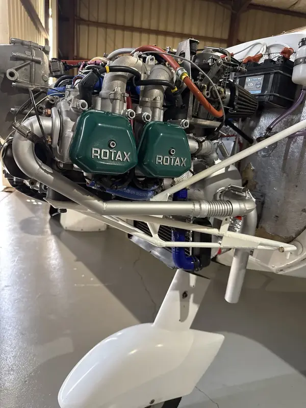
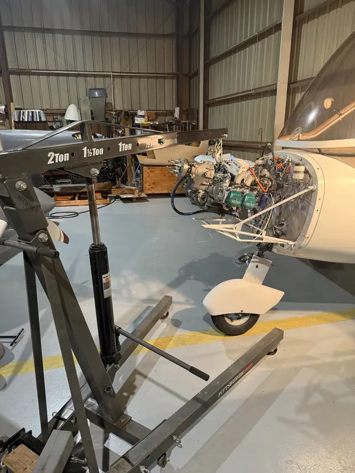
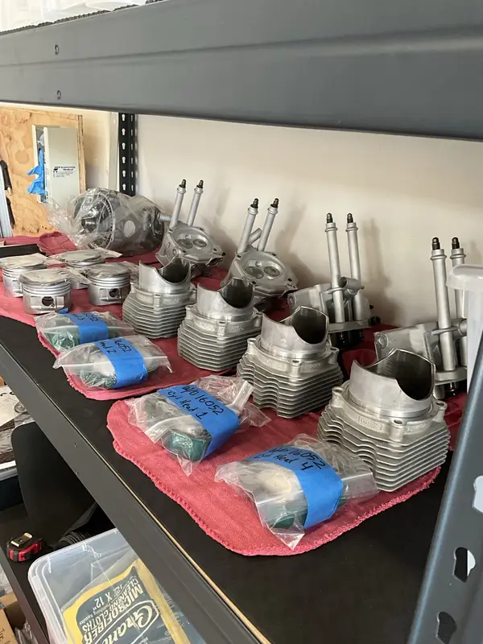
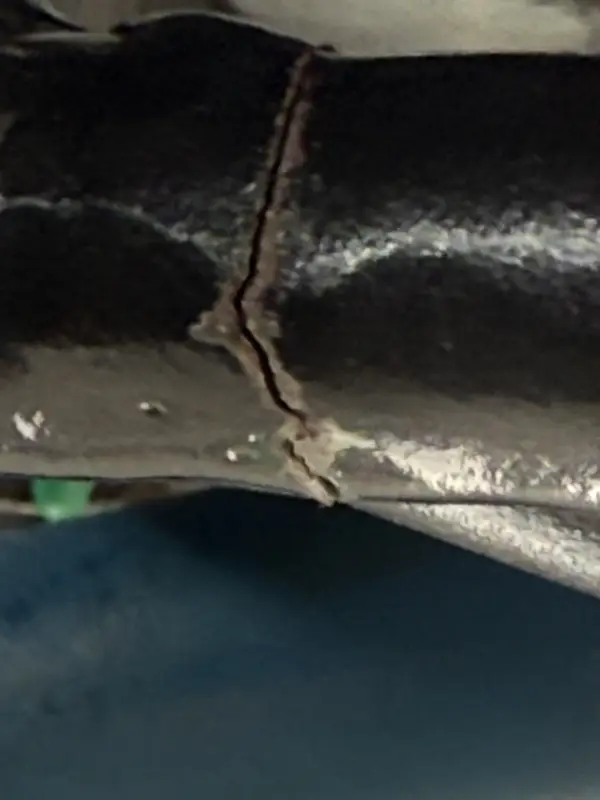
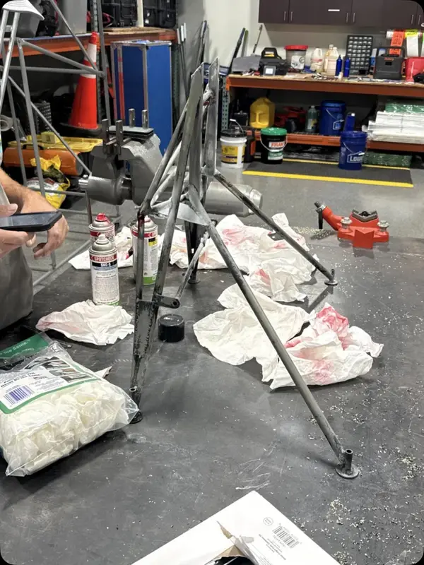
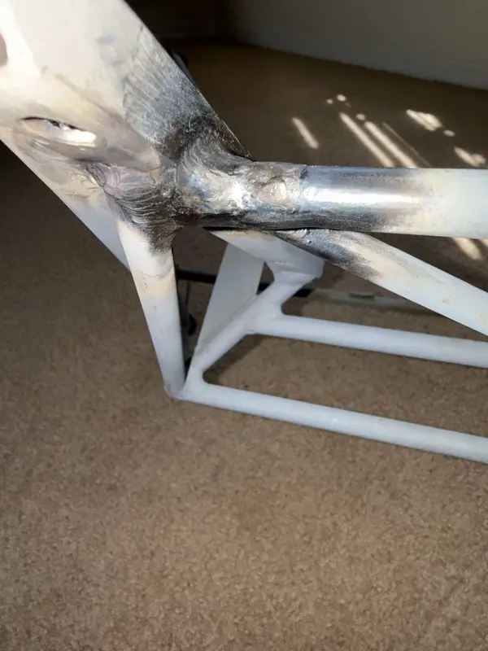
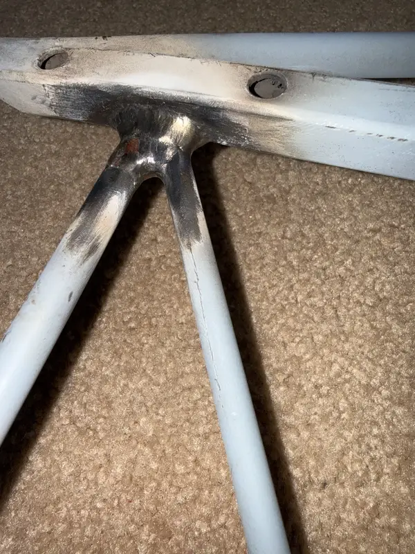
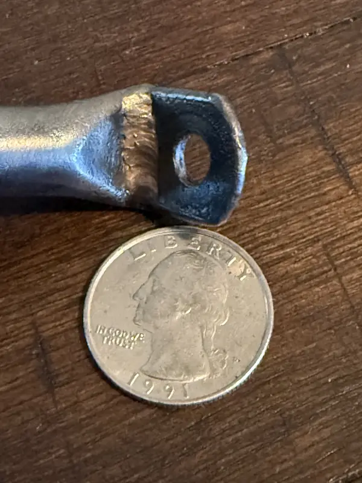
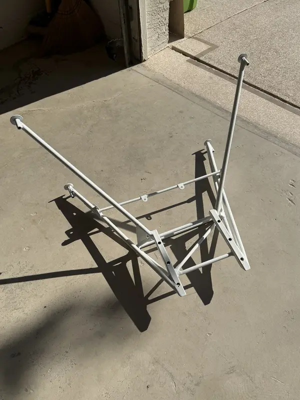
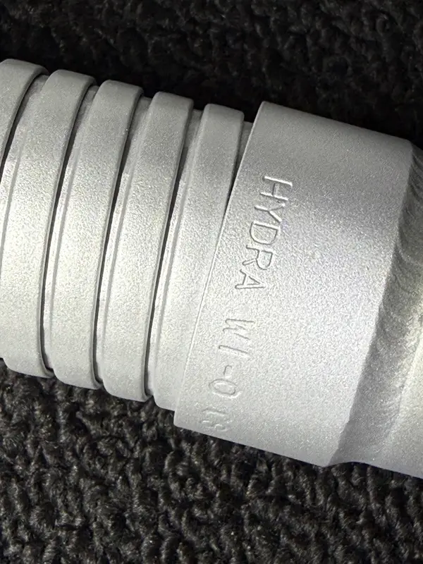

Installation Review
ROTAX Engine Installation Review
A ROTAX installation is reviewed as a system: engine, airframe integration, cooling, fuel, oil, exhaust, controls, electrical, documentation, and service access.
System Review
Many ROTAX Problems Start Outside the Engine.
Temperature, vibration, fuel pressure, starting, rough running, and serviceability concerns can be influenced by installation details, routing, documentation, and prior maintenance.

What Helps First
Aircraft location, engine model, visible symptoms, installation records if available, and photos if they are requested after the support request is submitted.
Installation & Major-work Proof
Access, Support, Organization, Inspection, and Records Are Part of the Job.
An installation review looks beyond the engine data plate. Airframe fit, wiring, hoses, controls, service access, work support, parts control, applicable documents, and outside specialist findings all affect maintainability.









Review Items
Installation Details That Matter.
Cooling / Oil / Fuel
The Surrounding Systems Can Shape the Symptom.
Cooling airflow, oil cooler placement, radiator position, ducting, cowling condition, and hose routing can all affect temperature behavior. A high oil temperature complaint may require looking at oil pressure trend, coolant or CHT trend, phase of flight, outside conditions, sensor confidence, and recent cowling or maintenance changes before any conclusion is useful.
Fuel system routing also matters. Fuel pressure behavior, pump configuration, filter access, heat exposure, return-line context where applicable, hose age, clamp condition, and contamination history can influence rough running, power changes, or warning messages. The installation review keeps fuel observations separate from ignition or EMS conclusions until the evidence supports a path.
Exhaust / Electrical / Sensors
Small Installation Details Can Have Large Effects.
Exhaust condition, heat shielding, sensor placement, wiring support, ground paths, connector security, and chafe protection can change how a ROTAX 9 Series installation behaves. On 915 iS and 916 iS aircraft, EMS/ECU context, turbo-related routing, intercooler layout, and heat management add another layer of installation review.
Service access is part of the standard. If a component cannot be inspected, adjusted, secured, or documented without fighting the installation, the aircraft may be harder to support even when the engine itself is healthy.
Propeller / Gearbox Interface
The Engine Does Not Work Alone.
Propeller choice, pitch, balance, tracking, mounting, and gearbox history can influence vibration, starting behavior, acceleration, and owner-reported roughness. Installation review separates propeller and airframe factors from gearbox and engine factors so one complaint does not turn into a premature diagnosis.
This is especially important when there is a history of propeller work, kickback, shock loading, recent mount work, or vibration in a narrow RPM range.
The same discipline applies to service access and documentation. A neat-looking installation can still be difficult to inspect if hoses, wiring, sensors, or exhaust components are routed in ways that hide condition, create chafe risk, or make recurring maintenance harder than it should be.
Start With the Facts
Send the Aircraft, Engine Model, and What Needs Verification.
Installation questions depend on aircraft documents, engine configuration, cooling, fuel, electrical, controls, service access, and records. Send what needs to be verified first.
Send Aircraft DetailsBoundary
Installation Reviews Stay Aircraft-specific.
Review scope depends on the engine model, aircraft design, manuals, service bulletins, safety directives, operating limitations, and certificate privileges involved.
Related Support
For symptom-specific intake, start with the ROTAX 9 Series issue hub.
ROTAX 9 Series Hub